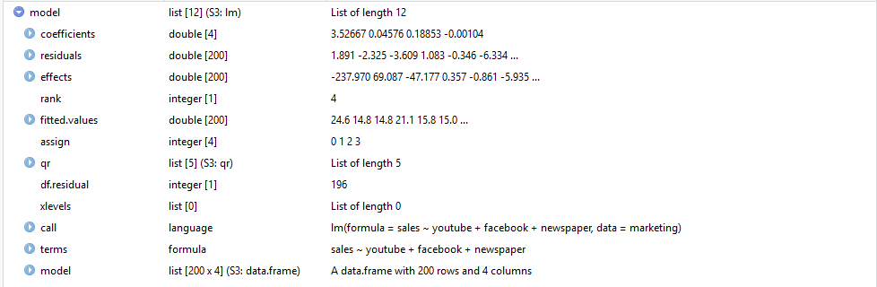
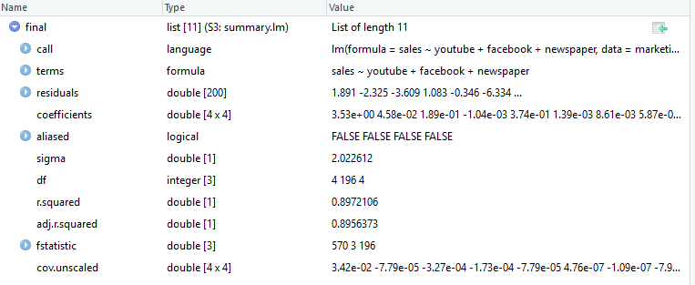

Dzień 1 - Model liniowy
Model liniowy
Rozważamy wpływ zbioru \(k\) zmiennych \(X_1, \ldots, X_k\) na zmienną \(Y\). Należy wprowadzić do modelu jak największą liczbę zmiennych niezależnych oraz powinny się w nim znaleźć zmienne silnie skorelowane ze zmienną zależną i jednocześnie jak najsłabiej skorelowane między sobą.
Liniowy model regresji wielowymiarowej:
\[Y=\beta_0 +\beta_1\cdot X_1+\beta_2\cdot X_2+\ldots+\beta_k\cdot X_k+\varepsilon.\] \(\beta_i\) - współczynniki regresji (parametry modelu) opisujące wpływ \(i\)-tej zmiennej. \(\varepsilon\) - składnik losowy.
Załadujmy pakiety i pewną ramkę danych:
library(tidyverse)
devtools::install_github("kassambara/datarium")
data("marketing", package = "datarium")head(marketing)## youtube facebook newspaper sales
## 1 276.12 45.36 83.04 26.52
## 2 53.40 47.16 54.12 12.48
## 3 20.64 55.08 83.16 11.16
## 4 181.80 49.56 70.20 22.20
## 5 216.96 12.96 70.08 15.48
## 6 10.44 58.68 90.00 8.64Ramka marketing opisuje wydatki na reklamę w poszczególnych mediach oraz zyski ze sprzedaży. Naszym celem zbadanie wpływu wydatków na wyniki sprzedaży.
Sprawdźmy co otrzymamy w R:
model <- lm(sales ~ youtube + facebook + newspaper, data = marketing)
final<-summary(model)
final##
## Call:
## lm(formula = sales ~ youtube + facebook + newspaper, data = marketing)
##
## Residuals:
## Min 1Q Median 3Q Max
## -10.5932 -1.0690 0.2902 1.4272 3.3951
##
## Coefficients:
## Estimate Std. Error t value Pr(>|t|)
## (Intercept) 3.526667 0.374290 9.422 <2e-16 ***
## youtube 0.045765 0.001395 32.809 <2e-16 ***
## facebook 0.188530 0.008611 21.893 <2e-16 ***
## newspaper -0.001037 0.005871 -0.177 0.86
## ---
## Signif. codes: 0 '***' 0.001 '**' 0.01 '*' 0.05 '.' 0.1 ' ' 1
##
## Residual standard error: 2.023 on 196 degrees of freedom
## Multiple R-squared: 0.8972, Adjusted R-squared: 0.8956
## F-statistic: 570.3 on 3 and 196 DF, p-value: < 2.2e-16Widok w RStudio:

Strona w dokumentacji o funkcji lm - link.

Sprawdźmy typ:
class(model)## [1] "lm"class(final)## [1] "summary.lm"Współczynniki w modelu
Zapiszmy nasz model w postaci:
\[ y = X\beta + \varepsilon,\] gdzie: \[y = \begin{bmatrix} y_1 \\ y_2 \\ \vdots \\ y_n \end{bmatrix}, \quad {X}=\begin{bmatrix} X_{10} & X_{11} & X_{12} & \cdots & X_{1p} \\ X_{20} & X_{21} & X_{22} & \cdots & X_{2p} \\ \vdots & \vdots & \vdots & \ddots & \vdots \\ X_{n0} &X_{n1} & X_{n2} & \cdots & X_{np} \end{bmatrix} , \quad \beta = \begin{bmatrix} \beta_0 \\ \beta_1 \\ \vdots \\ \beta_p \end{bmatrix}, \quad \varepsilon = \begin{bmatrix} \varepsilon_1 \\ \varepsilon_2 \\ \vdots \\ \varepsilon_n \end{bmatrix}\]
Na mocy konwencji \(x_{i0} = 1\) dla wszystkich \(i = 1, \ldots, n\). Wtedy \(\beta_0\) jest wyrazem wolnym. Możemy też zapisać następująco: \[y_i = \beta_0 +X_{i1}\beta_1+X_{i2}\beta_2+\ldots+X_{ip}\beta_p+\varepsilon_i, \quad i=1,\ldots, n.\]
Zazwyczaj taki układ równań nie ma rozwiązania. Naszym zadaniem jest znalezienie możliwych wektorów \(\beta\), które “dają najlepsze dopasowanie”. Innymi słowy, musimy “matematycznie” rozwiązać problem znalezienia \[\hat{\beta}=\underset{\beta}{\operatorname{arg\,min}}\,S(\beta), \] \[S(\beta) = \sum_{i=1}^n \bigl| y_i - \sum_{j=0}^p X_{ij}\beta_j\bigr|^2 = \bigl\| y - X \beta \bigr\|^2.\] Rozwiązaniem jest: \[\hat{\beta}= ( X^T X )^{-1} X^T y.\]
Dowód: wiki lub dowolny “dobry” podręcznik do zaawansowanej analizy matematycznej lub/i statystyki.
Jak to policzyć dla ramki marketing?
x<-cbind(rep(1,200),as.matrix(marketing[,c(1,2,3)]))
y<-as.matrix(marketing[,c(4)])
betah = solve(t(x) %*% x) %*% (t(x) %*% y)
betah## [,1]
## 3.526667243
## youtube 0.045764645
## facebook 0.188530017
## newspaper -0.001037493model$coefficients## (Intercept) youtube facebook newspaper
## 3.526667243 0.045764645 0.188530017 -0.001037493summary(model)$coefficients[,1]## (Intercept) youtube facebook newspaper
## 3.526667243 0.045764645 0.188530017 -0.001037493coef(model)## (Intercept) youtube facebook newspaper
## 3.526667243 0.045764645 0.188530017 -0.001037493betah-model$coefficients## [,1]
## -6.838974e-14
## youtube 2.428613e-16
## facebook -3.885781e-16
## newspaper 5.861197e-16Odchylenie standardowe regresji
Dopasowane wartości (przewidywane wartości) - wartości otrzymane poprzez model: \[\hat{y}=X\hat{\beta}=Py, \quad P=X(X^TX)^{-1}X^T.\] Zróbmy to w R:
yh<-x %*% betah
p<-x %*% solve(t(x) %*% x) %*% t(x)
yh2<- p %*% y
yh3<-model$fitted.values
head(cbind(yh,yh2,yh3))## yh3
## 1 24.62877 24.62877 24.62877
## 2 14.80543 14.80543 14.80543
## 3 14.76920 14.76920 14.76920
## 4 21.11740 21.11740 21.11740
## 5 15.82641 15.82641 15.82641
## 6 14.97402 14.97402 14.97402Zauważmy, że \(PX=X\) oraz \(PX-X=0\). Niech \(M=I_n-P\). Wtedy \(MX=0\). Macierz \(M\) nazywamy macierzą anihilującą.
W R mamy:
head(p %*% x)## youtube facebook newspaper
## [1,] 1 276.12 45.36 83.04
## [2,] 1 53.40 47.16 54.12
## [3,] 1 20.64 55.08 83.16
## [4,] 1 181.80 49.56 70.20
## [5,] 1 216.96 12.96 70.08
## [6,] 1 10.44 58.68 90.00head(x)## youtube facebook newspaper
## [1,] 1 276.12 45.36 83.04
## [2,] 1 53.40 47.16 54.12
## [3,] 1 20.64 55.08 83.16
## [4,] 1 181.80 49.56 70.20
## [5,] 1 216.96 12.96 70.08
## [6,] 1 10.44 58.68 90.00m<-diag(200)-p
head(m %*% x)## youtube facebook newspaper
## [1,] -1.882175e-16 -1.170453e-13 -2.310565e-14 5.541834e-14
## [2,] 2.740863e-16 4.223288e-13 -4.801715e-15 4.510281e-15
## [3,] -1.526557e-15 2.353673e-13 -4.754530e-14 1.862399e-14
## [4,] -2.359224e-16 2.091660e-13 -1.249001e-15 4.567874e-14
## [5,] 1.023487e-16 -3.175238e-14 -2.490369e-14 7.316370e-14
## [6,] -1.242062e-15 3.108624e-13 -3.716472e-14 5.159762e-14Teraz możemy obliczyć reszty (residua):
\[ \hat{\varepsilon} = y - \hat{y} = y - X\hat{\beta} = My = M(X\beta+\varepsilon) = (MX)\beta + M\varepsilon = M\varepsilon.\] W R wygląda to następująco:
eh<-y-yh
head(eh)## [,1]
## [1,] 1.8912307
## [2,] -2.3254258
## [3,] -3.6092049
## [4,] 1.0826046
## [5,] -0.3464062
## [6,] -6.3340172quantile(eh)## 0% 25% 50% 75% 100%
## -10.5932245 -1.0689763 0.2901621 1.4271824 3.3950671quantile(model$residuals)## 0% 25% 50% 75% 100%
## -10.5932245 -1.0689763 0.2901621 1.4271824 3.3950671quantile(summary(model)$residuals)## 0% 25% 50% 75% 100%
## -10.5932245 -1.0689763 0.2901621 1.4271824 3.3950671Dzięki resztom możemy estymować wariancję:
\[s^2 = \frac{\hat{\varepsilon} ^T \hat{\varepsilon}}{n-p} = \frac{(My)^T My}{n-p} = \frac{y^T M^TMy}{n-p}= \frac{y ^T My}{n-p} = \frac{S(\hat{\beta})}{n-p},\quad \hat\sigma^2 = \frac{n-p}{n}\;s^2\] U nas \(n=200\) i \(p=4\) (liczba zmiennych plus 1 zgodnie z konwencją). Liczba \(n-p\) odpowiada “w ujęciu statystycznym” liczbie stopni swobody.
W R mamy:
s2<- t(eh) %*% eh /196
s2<-as.numeric(s2)
sqrt(s2)## [1] 2.022612sigmah2<-196/200*s2
sqrt(sigmah2)## [1] 2.002284\(s^2\) jest nieobciążonym estymatorem wariancji przy użyciu metody najmniejszych kwadratów. \(\hat{\sigma}^2\) jest obciążonym estymatorem wariancji przy użyciu metody najmniejszej wiarygodności. Częściej jest używane \(s^2\).
summary(model)$sigma## [1] 2.022612\(s^2\) nazywa się odchyleniem standardowym składnika resztowego, błędem standardowym regresji, odchyleniem standardowym regresji…
“Dobroć” dopasowania
Współczynnik determinacji:
\[ R^2 = \frac{\sum(\hat{y}_i-\overline{y})^2}{\sum(y_i-\overline{y})^2} = \frac{y ^T P ^T LPy}{y ^T Ly} = 1 - \frac{y^T My}{y^T Ly} = 1 - \frac{ SSR}{SST} = \frac{SSM}{SST},\] gdzie \(L=I_n - \mathbf{1}\mathbf{1}^T/n\), a \(\mathbf{1}\) to macierz wymiaru \(n\times 1\) składająca się z samych jedynek. \(SST\) - całkowita (totalna) suma kwadratów, \(SSR\) - suma kwadratów reszt (błędów), \(SSM\) - skorygowana suma kwadratów dla modelu.
W R mamy:
ym=mean(y)
ssm<-sum((yh-ym)^2)
sst<-sum((y-ym)^2)
r2<-ssm/sst
r2## [1] 0.8972106one<-matrix( rep( 1, len=200), nrow = 200)
l<-diag(200)- one %*% t(one) /200
t(y) %*% t(p) %*% l %*% p %*% y / (t(y) %*% l %*% y)## [,1]
## [1,] 0.89721061- t(y) %*% m %*% y /(t(y) %*% l %*% y)## [,1]
## [1,] 0.8972106summary(model)$r.squared## [1] 0.8972106Skorygowany współczynnik determinacji:
\[\overline{R}^2=1 - (1 - R^2) \frac{n - 1}{n - p}\] W R mamy:
ro2<-1-((1-r2)*(199/196))
ro2## [1] 0.8956373summary(model)$adj.r.squared## [1] 0.8956373F-test
Powtórzmy i wprowadźmy nowe oznaczenia:
- \(n\) - liczba obserwacji
- \(p\) - liczba parametrów regresji (w modelu liniowym to liczba zmiennych objaśniających+1 zgodnie z konwencją)
- \(SSM\) - skorygowana suma kwadratów modelu \[SSM=\sum_{i=1}^n ( \hat{y}_i-\overline{y} )^2\]
ssm<-sum((yh-ym)^2)
ssm## [1] 6998.866- \(SSR \ (SSE)\) - suma kwadratów reszt, błędów
\[SSR=\sum_{i=1}^n ( y_i-\hat{y}_i )^2\]
ssr<-sum((y-yh)^2)
ssr## [1] 801.8284- \(SST\) - skorygowana totalna (całkowita) suma kwadratów
\[ SST = \sum_{i=1}^n ( y_i-\overline{y} )^2\]
sst<-sum((y-ym)^2)
sst## [1] 7800.694Zachodzi równość: \[SSM+SSR=SST\]
ssm+ssr## [1] 7800.694- \(DFM\) - skorygowane stopnie swobody modelu (u nas w modelu liniowym liczba zmiennych objaśniających), \(DFM=p-1\)
- \(DFE\) - stopnie swobody błędu, \(DFE=n-p\)
- \(DFT\) - skorygowane totalne (całkowite) stopnie swobody, \(DFT=n-1\)
Zachodzi: \[DFM + DFE = DFT.\]
- \(MSM\) - średnia kwadratów modelu, \(MSM = SSM / DFM\)
msm<-ssm/3
msm## [1] 2332.955- \(MSE\) - średnia kwadratów błędów, \(MSE = SSR / DFE\)
mse<-ssr/196
mse## [1] 4.090961- \(MST\) - totalna (całkowita) średnia kwadratów, \(MST = SST / DFT\)
mst<-sst/199
mst## [1] 39.19947F-test dla regresji wielowymiarowej
\[H_0: \qquad \beta_1 = \beta_2 = \ldots = \beta_{p-1} = 0\]
\[H_1: \qquad \beta_j \neq 0 \ \mathrm{dla \ co \ najmniej \ jednego} \ j.\] Wyliczamy statystykę:
\[F=\frac{MSM}{MSE} = \frac{\mathrm{"wyjaśniona \ wariancja"}}{\mathrm{"niewyjaśniona \ wariancja"}} \]
f<-msm/mse
f## [1] 570.2707summary(model)$fstatistic## value numdf dendf
## 570.2707 3.0000 196.0000Statystyka ta podlega rozkładowi F-Snedecora z \(p-1\) i \(n-p\) stopniami swobody. Ustalamy \(\alpha=0,05\).
qf(0.95, 3, 196)## [1] 2.650677Jeśli wartość statystyki jest większa kwantylowi, odrzucamy hipotezę zerową. W przeciwnym wypadku przyjmujemy hipotezę zerową.
W naszym wypadku odrzucamy hipotezę zerową. Innymi słowy, odrzucamy hipotezę że wydatki na reklamy na poszczególne media nie mają wpływu na sprzedaż.
Obliczmy wartość \(p\):
p<-1-pf(f, 3,196)
p## [1] 0fstat<-summary(model)$fstatistic
1-pf(fstat[1], fstat[2],fstat[3])## value
## 0W naszym wypadku jest to “bliskie” zeru, więc możemy przyjąć, że się zgadza.
Jeśli \(p\leqslant \alpha\) odrzucamy \(H_0\) przyjmując \(H_1\). W przeciwnym wypadku nie ma podstaw by odrzucić \(H_0\).
t-test
Przypomnijmy, że \[\hat{\beta}= ( X^T X )^{-1} X^T y.\]
Wariancja wektora współczynników: \[\operatorname(VAR) (\hat{\beta}) = \sigma^2 (X^TX)^{-1}.\] Zamieniając na estymator nieobciążony: \[\widehat{\operatorname(VAR)}(\hat{\beta}) = s^2 (X^TX)^{-1} \] By otrzymać odchylenie standardowe poszczególnych współczynników, wybieramy elementy na głównej przekątnej ostatniej macierzy i potem je pierwiastkujemy.
v<-s2 * solve(t(x) %*% x)
v## youtube facebook newspaper
## 0.1400929170 -3.188728e-04 -1.338587e-03 -7.092255e-04
## youtube -0.0003188728 1.945737e-06 -4.470395e-07 -3.265950e-07
## facebook -0.0013385874 -4.470395e-07 7.415335e-05 -1.780062e-05
## newspaper -0.0007092255 -3.265950e-07 -1.780062e-05 3.446875e-05vcov(model)## (Intercept) youtube facebook newspaper
## (Intercept) 0.1400929170 -3.188728e-04 -1.338587e-03 -7.092255e-04
## youtube -0.0003188728 1.945737e-06 -4.470395e-07 -3.265950e-07
## facebook -0.0013385874 -4.470395e-07 7.415335e-05 -1.780062e-05
## newspaper -0.0007092255 -3.265950e-07 -1.780062e-05 3.446875e-05varbeta<-sqrt(diag(v))
sqrt(diag(vcov(model)))## (Intercept) youtube facebook newspaper
## 0.374289884 0.001394897 0.008611234 0.005871010summary(model)$coefficients[,2]## (Intercept) youtube facebook newspaper
## 0.374289884 0.001394897 0.008611234 0.005871010Statystykę \(t\) określamy następująco: \[t=\frac{\hat{\beta}}{\widehat{\operatorname(VAR)}(\hat{\beta})}\]
tstat<-betah/varbeta
tstat## [,1]
## 9.4222884
## youtube 32.8086244
## facebook 21.8934961
## newspaper -0.1767146summary(model)$coefficients[,3]## (Intercept) youtube facebook newspaper
## 9.4222884 32.8086244 21.8934961 -0.1767146Na koniec liczymy odpowiednie prawdopodobieństwo (liczba stopni swobody to \(n-p\)):
2 * pt(abs(tstat), 196, lower.tail = FALSE)## [,1]
## 1.267295e-17
## youtube 1.509960e-81
## facebook 1.505339e-54
## newspaper 8.599151e-01summary(model)$coefficients[,4]## (Intercept) youtube facebook newspaper
## 1.267295e-17 1.509960e-81 1.505339e-54 8.599151e-01Test \(t\) pozwala zweryfikować istotność oszacowania parametru dla każdej ze zmiennej objaśniającej. \[H_0: \qquad \beta_i=0\] \[H_1: \qquad \beta_i\neq 0\]
Jeśli prawdopodobieństwo jest mniejsze niż poziom ufności (domyślnie \(\alpha=0,05\)) to odrzucamy \(H_0\) na rzecz \(H_1\) (odpowiednia zmienna objaśniająca ma wpływ na zmienną objaśnianą). W przeciwnym wypadku nie mamy podstaw do odrzucenia \(H_0\) (brak wpływu).
W rozważanym przykładzie jedynie w przypadku zmiennej newspaper przyjmujemy \(H_0\). Nie jest zatem znacząca w modelu regresji wielokrotnej. Oznacza to, że w przypadku ustalonej kwoty budżetu reklamowego youtube i facebook zmiany w budżecie reklamowym newspaper nie wpłyną znacząco na wyniki sprzedaży. Możemy zatem zmienną newspaper usunąć z modelu:
model2 <- lm(sales ~ youtube + facebook, data = marketing)
summary(model2)##
## Call:
## lm(formula = sales ~ youtube + facebook, data = marketing)
##
## Residuals:
## Min 1Q Median 3Q Max
## -10.5572 -1.0502 0.2906 1.4049 3.3994
##
## Coefficients:
## Estimate Std. Error t value Pr(>|t|)
## (Intercept) 3.50532 0.35339 9.919 <2e-16 ***
## youtube 0.04575 0.00139 32.909 <2e-16 ***
## facebook 0.18799 0.00804 23.382 <2e-16 ***
## ---
## Signif. codes: 0 '***' 0.001 '**' 0.01 '*' 0.05 '.' 0.1 ' ' 1
##
## Residual standard error: 2.018 on 197 degrees of freedom
## Multiple R-squared: 0.8972, Adjusted R-squared: 0.8962
## F-statistic: 859.6 on 2 and 197 DF, p-value: < 2.2e-16Inne zapisy
W R możemy wywołać modele nieco inną składnią:
model3 <- lm(sales ~., data = marketing)
summary(model3)##
## Call:
## lm(formula = sales ~ ., data = marketing)
##
## Residuals:
## Min 1Q Median 3Q Max
## -10.5932 -1.0690 0.2902 1.4272 3.3951
##
## Coefficients:
## Estimate Std. Error t value Pr(>|t|)
## (Intercept) 3.526667 0.374290 9.422 <2e-16 ***
## youtube 0.045765 0.001395 32.809 <2e-16 ***
## facebook 0.188530 0.008611 21.893 <2e-16 ***
## newspaper -0.001037 0.005871 -0.177 0.86
## ---
## Signif. codes: 0 '***' 0.001 '**' 0.01 '*' 0.05 '.' 0.1 ' ' 1
##
## Residual standard error: 2.023 on 196 degrees of freedom
## Multiple R-squared: 0.8972, Adjusted R-squared: 0.8956
## F-statistic: 570.3 on 3 and 196 DF, p-value: < 2.2e-16model4 <- lm(sales ~. -newspaper, data = marketing)
summary(model4)##
## Call:
## lm(formula = sales ~ . - newspaper, data = marketing)
##
## Residuals:
## Min 1Q Median 3Q Max
## -10.5572 -1.0502 0.2906 1.4049 3.3994
##
## Coefficients:
## Estimate Std. Error t value Pr(>|t|)
## (Intercept) 3.50532 0.35339 9.919 <2e-16 ***
## youtube 0.04575 0.00139 32.909 <2e-16 ***
## facebook 0.18799 0.00804 23.382 <2e-16 ***
## ---
## Signif. codes: 0 '***' 0.001 '**' 0.01 '*' 0.05 '.' 0.1 ' ' 1
##
## Residual standard error: 2.018 on 197 degrees of freedom
## Multiple R-squared: 0.8972, Adjusted R-squared: 0.8962
## F-statistic: 859.6 on 2 and 197 DF, p-value: < 2.2e-16model5 <- lm(marketing$sales~ marketing$youtube + marketing$facebook)
summary(model5)##
## Call:
## lm(formula = marketing$sales ~ marketing$youtube + marketing$facebook)
##
## Residuals:
## Min 1Q Median 3Q Max
## -10.5572 -1.0502 0.2906 1.4049 3.3994
##
## Coefficients:
## Estimate Std. Error t value Pr(>|t|)
## (Intercept) 3.50532 0.35339 9.919 <2e-16 ***
## marketing$youtube 0.04575 0.00139 32.909 <2e-16 ***
## marketing$facebook 0.18799 0.00804 23.382 <2e-16 ***
## ---
## Signif. codes: 0 '***' 0.001 '**' 0.01 '*' 0.05 '.' 0.1 ' ' 1
##
## Residual standard error: 2.018 on 197 degrees of freedom
## Multiple R-squared: 0.8972, Adjusted R-squared: 0.8962
## F-statistic: 859.6 on 2 and 197 DF, p-value: < 2.2e-16Założenia modelu
Istnienie: Dla każdej kombinacji wartości zmiennych objaśniających \(X_1, X_2,\ldots, X_k\), zmienna objaśniana \(Y\) jest (jednoznaczną) zmienną losową z określonym rozkładem prawdopodobieństwa posiadającym skończoną wartość oczekiwaną i wariancję.
Kontrolowanie wartości czynników: Zmienną losową jest zmienna \(Y\), podczas gdy zmienne \(X_1, X_2,\ldots, X_k\) są zmiennymi (nielosowymi) kontrolowanymi.
Liniowość: zmienna \(Y\) jest liniową kombinacją zmiennych \(X_1, X_2,\ldots, X_k\).
Niezależność: Obserwacje zmiennej objaśnianej \(Y\) są od siebie niezależne, tzn. poszczególne obserwacje zmiennej \(Y\) nie zależą od wartości otrzymanych wcześniej.
Stałość rozproszenia (homoscedastyczność): Wariancja (warunkowa) zmiennej \(Y\) dla dowolnej ustalonej kombinacji zmiennych \(X_1, X_2,\ldots, X_k\) jest taka sama (jednorodna) dla wszystkich rozkładów warunkowych
Normalność: Dla dowolnej ustalonej liniowej kombinacji zmiennych \(X_1, X_2,\ldots, X_k\), zmienna \(Y\) ma rozkład normalny

{kind=link}
{kind=link}
{kind=link}